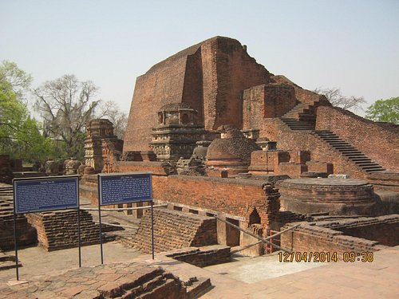
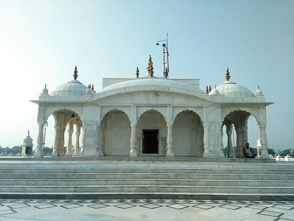

Famous Places
Eco Park

Rajdhani Vatika, better known as Ecological Park or Eco Park, is a park located at Strand Road in Patna, Bihar. This park was inaugurated in October 2011 by Nitish Kumar, the Chief Minister of Bihar, following an initiative of the Department of Environment and Forest, Bihar. The area has 1,445 metres of pathway, a children's corner and 1,191 metre jogging track. It has been developed to ease the load of Patna Zoo.The park is spread over 9.18 hectares of land, including two lakes
Gaya Pind Daan

By performing Pind Daan in Gaya, a person becomes free from his ancestors. That is also called Falgutirtha. By offering Pind Daan here the ancestors attain supreme bliss. With this the person gets freedom from ancestral debt. Lord Vishnu resides in the form of ancestral deity in Gaya area.
Great Buddha Statue

The Great Buddha statue is one of the popular stops on the Buddhist pilgrimage and tourist routes in Bodh Gaya, Bihar (India). The statue is 18.5 m (61 ft) high representing the Buddha seated in a meditation pose, or dhyana mudra, on a lotus in the open air. The total height of the construction is 80 ft (24 m) of which the Buddha makes up 64 ft (20 m), the lotus on which the Buddha sits 5 ft (1.5 m) and the lower pedestal 10 ft (3.0 m). The construction's width is nearly 60 ft (18 m) at its maximum. The statue was designed by V. Ganapati Sthapati and took seven years to complete using the labor of 12,000 stonemasons.
Mahavir Temple

Mahavir Temple is a Hindu temple dedicated to Lord Hanuman, located in Patna, Bihar, India. Every year lakhs of pilgrims come to visit the temple. Acharya Kishore Kunal Mahavir Mandir is the Secretary of the Temple Trust, Patna.
Mahabodhi temple

The Mahabodhi Temple , a UNESCO World Heritage Site, is an ancient, but restored Buddhist temple in Bodh Gaya, Bihar, India, marking the location where the Buddha is said to have attained enlightenment. Bodh Gaya is 15 km from Gaya and is about 96 km (60 mi) from Patna. The site contains a descendant of the Bodhi Tree under which the Buddha gained enlightenment and has been a major pilgrimage destination of Buddhists for over two thousand years.
Nalanda
Nalanda was an acclaimed Mahavihara, a large Buddhist monastery in the ancient kingdom of Magadha (modern-day Bihar) in India. The site is located about 95 kilometres southeast of Patna near the town of Bihar Sharif, and was a centre of learning from the 5 CE to 1200 CE. It is a UNESCO World Heritage Site.
Pawapuri
Pawapuri, or Pavapuri (also called Apapapuri, meaning "the sinless town"), is a holy site for Jains located in the Nalanda district of Bihar state in eastern India. It is located about 19 kilometres from Rajgir and 101 kilometres from Patna, the capital of Bihar. Pawapuri is Mahavira's nirvana and a pilgrimage site for Jains.